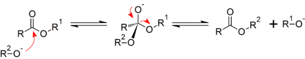

Transesterification
Transesterification is the process of exchanging the organic group R″ of an ester with the organic group R′ of an alcohol. These reactions are often catalyzed by the addition of an acid or base catalyst. The reaction can also be accomplished with the help of enzymes (biocatalysts) particularly lipases.
Strong acids catalyse the reaction by donating a proton to the carbonyl group, thus making it a more potent electrophile, whereas bases catalyse the reaction by removing a proton from the alcohol, thus making it more nucleophilic. Esters with larger alkoxy groups can be made from methyl or ethyl esters in high purity by heating the mixture of ester, acid/base, and large alcohol and evaporating the small alcohol to drive equilibrium.
The acids most commonly used for transesterifi cation are HCl as a gas bubbled into the reaction medium and p-toluenesulfonic acid. Transesterification is an equilibrium reaction and can be driven in either direction by control of experimental conditions. For example, in the reaction of methyl acrylate with 1-butanol, transesterification is carried out at a temperature slightly above the boiling point of methanol (the lowest boiling component in the mixture). Methanol distills from the reaction mixture, thus shifting the position of equilibrium in favor of butyl acrylate. Conversely, reaction of butyl acrylate with a large excess of methanol shifts the equilibrium to favor formation of methyl acrylate.
| Methyl propenoate (Methyl acrylate) (bp 81°C) | + |  1-Butanol 1-Butanol(bp 117°C) | HCl ⇌ | Butyl propenoate (Butyl acrylate) (bp 147°C) | + | CH3OH Methanol (bp 65°C) |
Meccanismo
Polyester production
The largest scale application of transesterification is in the synthesis of polyesters. In this application diesters undergo transesterification with diols to form macromolecules. For example, dimethyl terephthalate and ethylene glycol react to form polyethylene terephthalate and methanol, which is evaporated to drive the reaction forward.